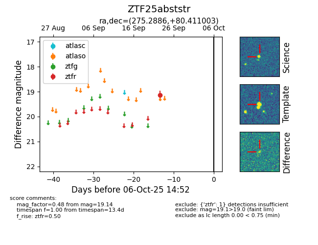

FINK: ZTF25abststr
Lasair: ZTF25abststr
ALeRCE: ZTF25abststr
ZTF25abststr (ztf,fink)
equatorial (ra, dec) = (275.2886,+80.41100)
galactic (l, b) = (112.1552,+27.97885)

last ztfr=19.14
1 ztfr detections